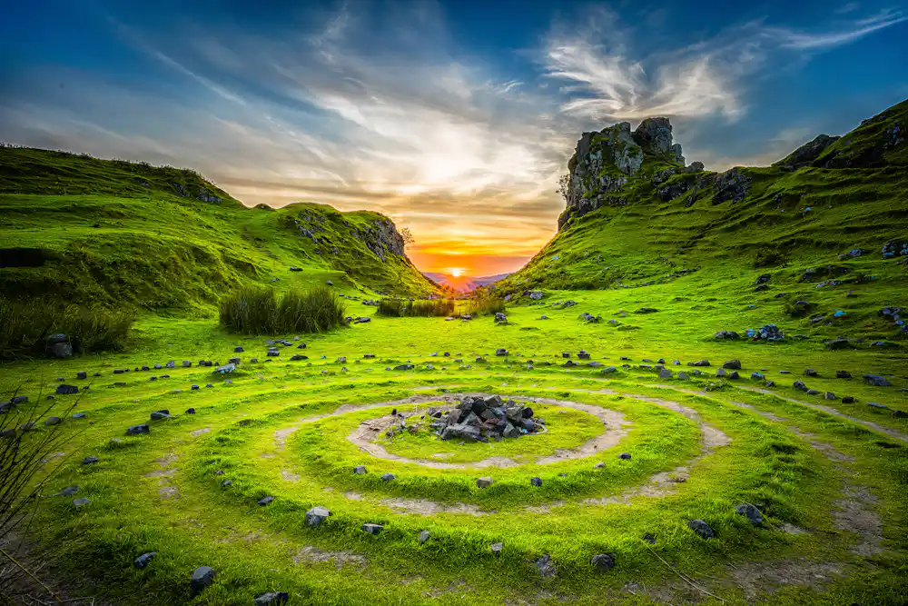
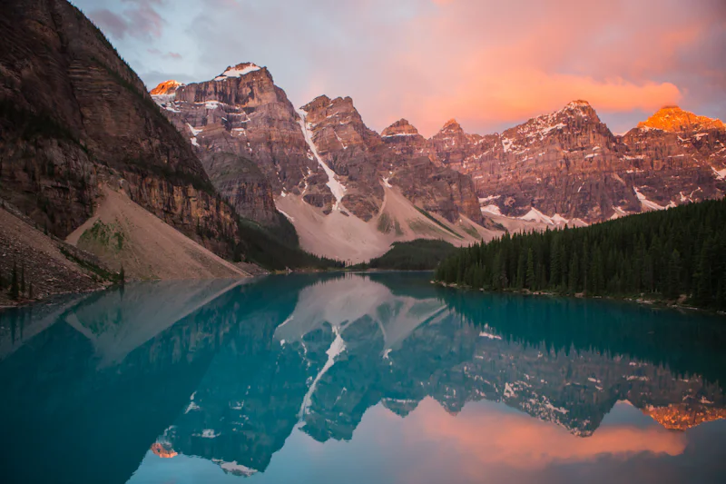
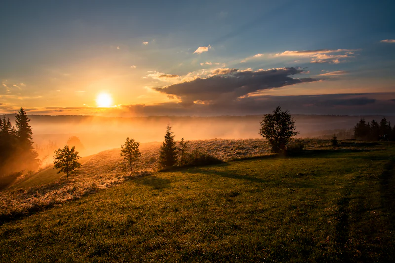
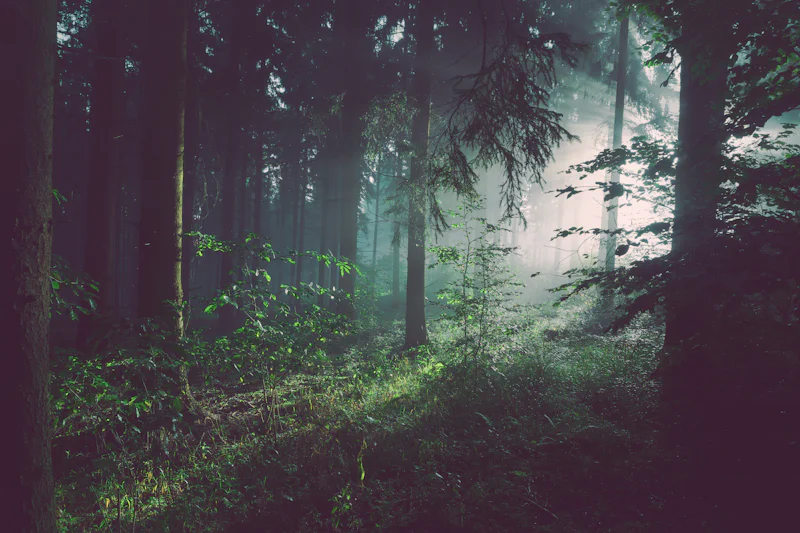

01 / Discover
Ambitious, not exhausting.
A first-time alpine traveler wanted a route that felt like a real step up without becoming a test of endurance.

The Arc / Four stages
The stages are simple. The work is in making them fit the person and the place.
We start with the traveler: confidence, pace, constraints and what would make the days feel worth it.

We shape a route around the season, the ground and the honest amount of effort available.

Kit, briefings and contingencies are built for the actual group, not an average one.

The guide reads the day as it arrives. The plan holds its shape without becoming rigid.
Featured journey / The high route, without the rush
An illustrative traveler story. Names and exact outcomes are placeholders.
01 / Discover
A first-time alpine traveler wanted a route that felt like a real step up without becoming a test of endurance.
02 / Design
We built the route around short days, hut nights and two clear windows for weather, with a lower pass as the honest alternative.
03 / Prepare
The kit list and training walks were shaped around one anxious knee, a fear of exposure and a group that wanted to stay together.
04 / Travel
Changeable weather closed the high crossing. The group took the lower pass, moved at their own pace and came home with the summit still ahead.
Journey index / Six starting points
Filter by the kind of traveler or the kind of ground. Illustrative journeys; details are placeholders.
Showing all 6 journeys.
Illustrative journeys. Client descriptors and outcomes are placeholders.
Outcomes / Before and after
An illustrative comparison from the featured journey. Drag the handle or use the arrow keys.
Voices / From the trail
Placeholder quotes from illustrative journeys. Names are withheld.
“I stopped treating the itinerary like a test I had to pass. The days were still full, but they belonged to us.”
“The route changed twice. Nobody panicked. That was the whole point.”
“We came home without the summit and with a better story than we expected.”
Illustrative quotes. Replace with verified traveler words before publishing.
Start your journey
Tell us the place, the season and the people. We’ll reply with an honest starting point.
Start a conversation Or ask a question first